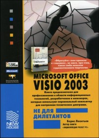
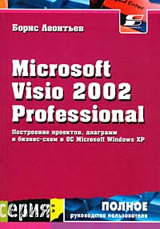
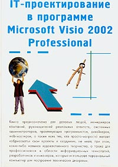
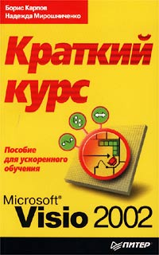
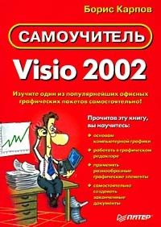
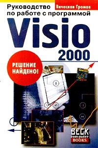
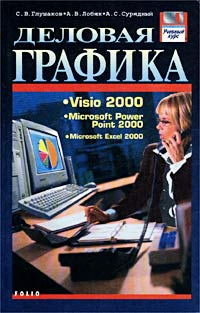
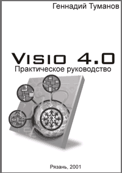

Книги по Microsoft Visio.
В интернет-магазине OZON было замечено очень большое количество книг на английском языке (и не только на английском), по Visio всех версий: начиная с Visio 5 и заканчивая Visio 2003.
Работает доставка по России. Если кому-то мало самоучителя, то может там найдете что-то подходящее.
Интернет-магазин OZON.ru
Книги по Microsoft Office Visio 2003
Борис Леонтьев
MS Office Visio 2003 не для дилетантов. Построение проектов, диаграмм и бизнес-схем в операционной системе MS Windows XP

Мягкая обложка, 384 стр., 2005 г.
Издательства: Новый Издательский Дом
ISBN: 5-9643-0067-7, Тираж: 2000 экз., Формат: 60x90/16
Аннотация
Microsoft Office Visio 2003 — входящее в систему Microsoft Office System приложение для работы с бизнес-диаграммами и техническими диаграммами — позволяет преобразовывать концепции и обычные бизнес-данные в диаграммы. Visio 2003 помогает лучше понимать и связывать важные данные для усовершенствования процесса принятия решений, обеспечить согласованность действий различных подразделений организации, расширить возможности связи, продемонстрировать профессионализм и произвести хорошее впечатление на аудиторию.
Microsoft Office Visio 2003 — это средство построения диаграмм, которое позволяет создавать технические и бизнес-диаграммы для документирования и организации сложных концепций, процессов и систем. Диаграммы, создаваемые в Visio 2003, обеспечивают возможность наглядного, лаконичного и выразительного представления данных, которого нельзя добиться с помощью обычного текста и цифр. Visio 2003 также автоматизирует визуальное представление данных за счет прямой синхронизации с источниками данных для создания обновляемых диаграмм и поддерживает настройку в соответствии с требованиями конкретной организации.
Visio упрощает создание технических и бизнес-диаграмм для анализа, организации и лучшего понимания сложных концепций, процессов и систем. Возможность выполнения более сложных задач, улучшенное восприятие данных и повышение эффективности работы способствуют успеху предприятия.
В данном издании подробно описаны особенности работы с Microsoft Office Visio 2003. Книга предназначена для профессионалов в области информационных технологий, разработчиков и инженеров, которые используют персональный компьютер для построения технических диаграмм. Также это издание будет востребовано деловыми людьми, менеджерами компаний, руководителями рекламных агентств, системными администраторами, дизайнерами, web-мастерами, а также всеми, кто просто хочет реализовать свои проекты и задумки, не имея каких-либо навыков художественного творчества.
Книги по Microsoft Visio 2002
Microsoft Visio 2002 Professional. Построение проектов, диаграмм и бизнес-схем в ОС Microsoft Windows XP
Борис Леонтьев

Мягкая обложка, 512 стр., 2002 г.
Издательства: СОЛОН-Р
ISBN: 5-93455-132-9, Тираж: 3000 экз., Формат: 70x100/16
Аннотация
С помощью Microsoft Visio 2002 Professional удобно проектировать локальные и глобальные сети, в частности, планировать коммутационные панели, помещения для серверов. При этом для построения диаграмм используются объекты из арсенала новейших сетевых технологий. Вместе с объектами сохраняются их подробные атрибуты, благодаря чему ИТ-специалисты могут отслеживать данные, связанные с тем или иным устройством, входящим в состав сети. Создание диаграмм баз данных помогает наглядно представить структуру базы данных (и объяснить другим, как эта структура выглядит). Кроме того, с помощью продукта Microsoft Visio 2002 Professional Edition можно разрабатывать подробные карты web-узлов и схемы программ.
Книга предназначена для деловых людей, менеджеров компаний, руководителей рекламных агентств, системных администраторов, практикующих программистов, дизайнеров, web-мастеров, а также всех тех, кто просто-напросто желает "обрисовать" свои проекты и "задумки", не имея, при этом, каких-либо навыков художественного творчества, рисования и тому похожих "штучек".
Книга предназначена для профессионалов в области информационных технологий, разработчиков и инженеров, которые используют персональный компьютер для построения технических диаграмм.
Мои комментарии
Одна из последних книг по Visio, что я прочитал. Первая треть книги посвящена Windows XP, затем немного самоучителя по Visio и затем идет "глубокий" Visual Basic. Не самая удачная книга для тех, кто хочет изучить Visio самостоятельно.
IT-проектирование в программе Microsoft Visio 2002 Professional
Якушев Д.М.

Мягкая обложка, 384 стр., 2004 г.
Издательства: М: Познавательная книга Пресс
ISBN: 5-8321-0601-8, Тираж: 1000 экз., Формат: 60x90/16
Аннотация
С помощью Microsoft Visio 2002 Professional удобно проектировать локальные и глобальные сети, в частности, планировать коммутационные панели, помещения для серверов. При этом для построения диаграмм используются объекты из арсенала новейших сетевых технологий. Вместе с объектами сохраняются их подробные атрибуты, благодаря чему ИТ-специалисты могут отслеживать данные, связанные с тем или иным устройством, входящим в состав сети. Создание диафамм баз данных помогает наглядно представить структуру базы данных (и объяснить другим, как эта структура выглядит). Кроме того, с помощью продукта Microsoft Visio 2002 Professionall Edition можно разрабатывать подробные карты web-узлов и схемы профамм. Книга предназначена для деловых людей, менеджеров компаний, руководителей рекламных агентств, системных администраторов, практикующих программистов, дизайнеров, web-мастеров, а также всех тех, кто просто-напросто желает "обрисовать" свои проекты и "задумки", не имея, при этом, каких-либо навыков художественного творчества, а также для профессионалов в области информационных технологий, разработчиков и инженеров, которые используют персональный компьютер для построения технических диаграмм.
Мои комментарии
Книга является простой склейкой из нескольких книг. По сути дела 1 в 1 книга Бориса Леонтьева в новом переплете. Рисунки в книге черно-белые. Разобрать рисунки очень сложно. Замечания те же, что и к книге Леонтьева. Рекомендуется к чтению только в отсутствие альтернатив.
Microsoft Visio 2002. Краткий курс
Борис Карпов, Надежда Мирошниченко

Мягкая обложка, 256 стр., 2002 г.
Издательства: Питер
ISBN: 5-318-00624-8, Тираж: 5000 экз., Формат: 84x108/32
Аннотация
Книга посвящена описанию работы с Visio 2002 - мощным редактором деловой графики, позволяющим быстро и эффективно создавать при помощи встроенных шаблонов, трафаретов и стандартных модулей как простейшие слайды и схемы, так и очень сложные чертежи и диаграммы.
Здесь содержатся сведения, необходимые для полного освоения простого и прозрачного интерфейса Visio, которые позволят вам в совершенстве овладеть инструментами программы. При этом для понимания изложенного материала не требуется ни большого опыта работы с компьютером, ни глубоких знаний в области начертательной геометрии. Он вполне доступен для любого пользователя.
Мои комментарии
Хорошая книга для начинающего пользователя. Описаны принципы работы и основы черчения. Эта книга почти полностью повторяет краткий курс по Visio 2000, но от этого ничуть не хуже. Рекомендую для начинающих.
Самоучитель Visio 2002
Борис Карпов

Мягкая обложка, 352 стр., 2003 г.
Издательства: Питер
ISBN: 5-318-00766-Х, Тираж: 4000 экз., Формат: 70x100/16
Аннотация
Перед вами книга, с помощью которой вы быстро и нескучно познакомитесь с графическим редактором Visio. Овладев новым инструментом, вы сможете свободно творить, создавая всевозможные изображения - от простейших графических объектов (прямоугольников, линий и окружностей) до сложных технических и архитектурных чертежей, от простейших блок-схем до организационных и презентационных диаграмм. Вы сможете изображать планы местности, внутренних помещений, включающие схемы тепло-, водо-, газо- и электроснабжения, схемы охранных систем и многое другое.
Изучите один из популярнейших графических редакторов самостоятельно!
Мои комментарии
Кроме главы о ShapeSheet и рисунков, точная копия Краткого курса 2002. Рекомендую для начинающих.
Книги по Microsoft Visio 2000
Руководство по работе с программой Visio 2000
Вячеслав Громов

Мягкая обложка, 416 стр., 2000 г.
Издательства: Оверлей, Веск
ISBN 5-85403-047-9, Тираж: 5000 экз., Формат: 84x108/32
Текст книги здесь
Аннотация
Программа Visio 2000 позволяет не только подготавливать схемы и строить эскизы в среде Windows! На самом деле, Visio 2000 - тривиальный, мощный и в то же время мастерский инструмент для создания блок-схем, маркетинговых диаграмм и схем построения различных решений. Но и это еще не все! С помощью настоящей книги вы поймете, как с помощью так называемых визуальных образов и специальных Visio-приложений, воспроизводящих реальный мир визуализировать самые фантастические намерения вашего бизнеса. Книга предназначена для деловых людей, менеджеров компаний, руководителей рекламных агентств, системных администраторов, практикующих программистов, дизайнеров, web-мастеров, а также всех тех, кто просто-напросто желает `обрисовать` свои проекты и `задумки`, не имея,при этом, каких-либо навыков художественного творчества, рисования и тому похожих `штучек`. В общем, добро пожаловать в азбучный и виртуозный мир Visio 2000! Ворвитесь в него, не пожалеете!
Мои комментарии
Первая книга по Visio которую я прочитал. Как потом понял, часть перевода оригинальной документации по Visio. В принципе все понятно и просто. Рекомендую на вооружение начинающим. 8-)
Microsoft Visio 2000: краткий курс
Карпов Б., Мирошниченко Н.
Мягкая обложка, 256 стр., 2000 г.
Издательства: Питер
ISBN: 5-272-00184-2, Тираж: 5000 экз., Формат: 84x108/32
Аннотация
Книга посвящена описанию работы с Visio 2000 - мощным редактором деловой графики. С помощью встроенных в него шаблонов, трафаретов и стандартных модулей можно быстро и эффективно создавать как простейшие слайды или схемы, так и очень сложные чертежи или диаграммы. После освоения с помощью этой книги очень простого интерфейса Visio 2000 создание пользовательских изображений любой сложности превратится в игру, cхожую со складыванием кубиков. При этом для понимания изложенного материала не требуется глубоких знаний компьютера или начертательной геометрии. Он вполне доступен и начинающим пользователям.
Мои комментарии
Хорошая книга для начинающего пользователя. Описаны принципы работы и основы черчения. Для кратковременных работ с Visio, самое то. Рекомендую для начинающих.
Деловая графика. Visio 2000. Microsoft Power Point 2000. Microsoft Excel 2000
С. А. Глушаков, А. В. Лобяк, А. С. Сурядный

Твердый переплет, 400 стр., 2002 г.
Издательства: Фолио
ISBN: 966-03-1775-3, Тираж: 5000 экз., Формат: 84x108/32
Аннотация
В книге рассмотрена работа с деловой графикой: создание структурных схем в Visio 2000, работа с электронными таблицами в Microsoft Excel 2000 и создание презентаций в Microsoft PowerPoint 2000.
Основу книги составляет изложение работы с программой Visio 2000 - профессиональным редактором инженерной и деловой графики, позволяющей легко и просто создавать технические чертежи и модели, диаграммы и блок-схемы, маркетинговые проекты и презентации, для чего от пользователя не требуется глубоких знаний компьютера или начертательной геометрии.
Мои комментарии
В книге описываются основы работы и создание диаграмм и презентаций. Больше всего описана работа с мастерами Visio. т.к. Visio здесь в связке с Excel'ем и PowerPoint'ом, то это скорее обзорно-ознакомительный вариант.
Книги по Visio
Visio 4.0 Практическое руководство
Геннадий Туманов

Мягкая обложка, 204 стр., 2001 г.
Издательства: Рязань
Текст книги здесь
В начало раздела
Автор: Ничков Алексей (a.k.a. Digitall)